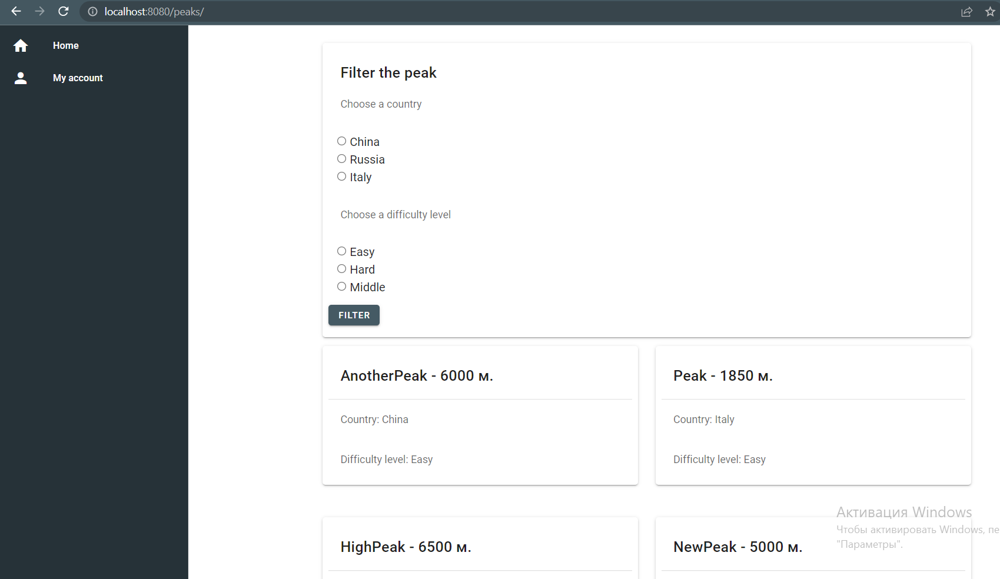
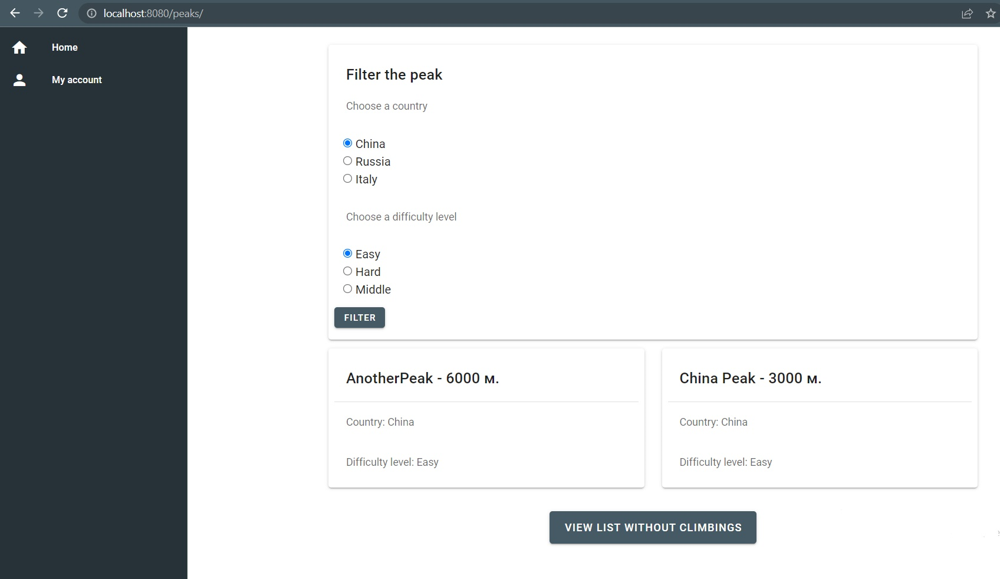
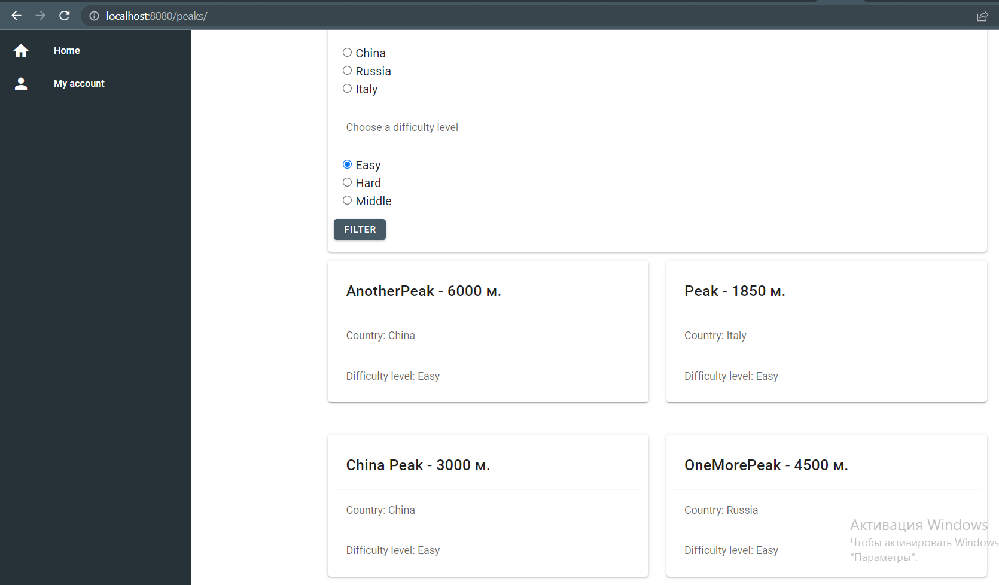

4.2 Checkbox
Фильтрация с чекбоксами
Для реализации чекбокса были добавлины input типа radio, которые позволяют выбрать необходимые критерии (страна и уровень сложности) для поиска подходящих для восхождения вершин. Полученные данные записываются в v-models 'picked' и 'level'. Далее при нажатии на кнопку либо один критерий либо оба (в зависимости от того сколько выбрал пользователь) передаются в метод getFilter(), которые получает отфильтрованные данные, в последствии отображающиеся на странице.
PeakList.vue
<template>
<v-container>
<v-card class="pa-2 mb-3" height="400px">
<v-card-title>Filter the peak</v-card-title>
<v-card-text>
<div>Choose a country</div>
</v-card-text>
<v-col>
<input type="radio" id="china" value="China" v-model="picked"><label for="china"> China </label>
<br>
<input type="radio" id="russia" value="Russia" v-model="picked"> <label for="russia"> Russia </label>
<br>
<input type="radio" id="italy" value="Italy" v-model="picked"><label for="italy"> Italy </label>
</v-col>
<v-card-text>
<div>Choose a difficulty level</div>
</v-card-text>
<v-col>
<input type="radio" id="easy" value="Easy" v-model="level"><label for="easy"> Easy</label>
<br>
<input type="radio" id="hard" value="Hard" v-model="level"><label for="hard"> Hard</label>
<br>
<input type="radio" id="middle" value="Middle" v-model="level"><label for="middle"> Middle</label>
</v-col>
<v-btn v-on:click.prevent="getFilter()" small color="blue-grey darken-2" class="mb-footer white--text">Filter</v-btn>
</v-card>
<v-row>
<template v-for="(peak, n) in peaks">
<v-col :key="n">
<v-card class="pa-2 mb-5" min-height="170">
<v-card-title>{{
peak.name + " - " + peak.height + " м."
}}</v-card-title>
<v-divider></v-divider>
<v-card-subtitle>Country: {{ peak.country }}</v-card-subtitle>
<v-card-subtitle>Difficulty level: {{ peak.route_description }}</v-card-subtitle>
</v-card>
</v-col>
<v-responsive
v-if="(n + 1) % 2 === 0"
:key="`width-${n}`"
width="100%"
></v-responsive>
</template>
</v-row>
<v-row justify="space-around">
<v-btn :to="getBtnLink" large color="blue-grey darken-2" class="mb-footer white--text">{{
getBtnName
}}</v-btn></v-row>
</v-container>
</template>
<script>
import UpdatePeak from './UpdatePeak.vue'
export default {
name: 'PeakList',
component: { UpdatePeak },
data: () => ({
peaks: [],
picked: '',
level: ''
}),
computed: {
getBtnName: function () {
if (this.$route.path.includes('no_trips')) {
return 'View full list'
}
return 'View list without climbings'
},
getBtnLink: function () {
if (this.$route.path.includes('no_trips')) {
return '/peaks/'
}
return '/peaks/no_trips'
}
},
mounted () {
this.getContext()
console.log(this.$route)
},
methods: {
getContext () {
this.axios.get('//127.0.0.1:8000' + this.$route.path)
.catch(function (error) {
if (error.response) {
console.log(error.response.status)
} else {
console.log('Error', error.message)
}
})
.then((response) => {
console.log(response.data)
this.peaks = response.data
})
console.log(this.peaks)
},
getFilter () {
if (this.picked !== '' && this.level !== '') {
var string = '?country=' + this.picked + '&route_description=' + this.level
} else if (this.picked === '' && this.level !== null) {
string = '?route_description=' + this.level
} else if (this.picked !== '' && this.level === '') {
string = '?country=' + this.picked
}
this.axios.get('//127.0.0.1:8000/peaks/' + string)
.catch(function (error) {
if (error.response) {
console.log(error.response.status)
} else {
console.log('Error', error.message)
}
})
.then((response) => {
console.log(response.data)
this.peaks = response.data
})
console.log(this.peaks)
}
}
}
</script>
Результат:

Рисунок 14.1 - Стартовая страница

Рисунок 14.2 - Страница после фильтрации по обоим параметрам

Рисунок 14.3 - Страница после фильтрации по одному параметру